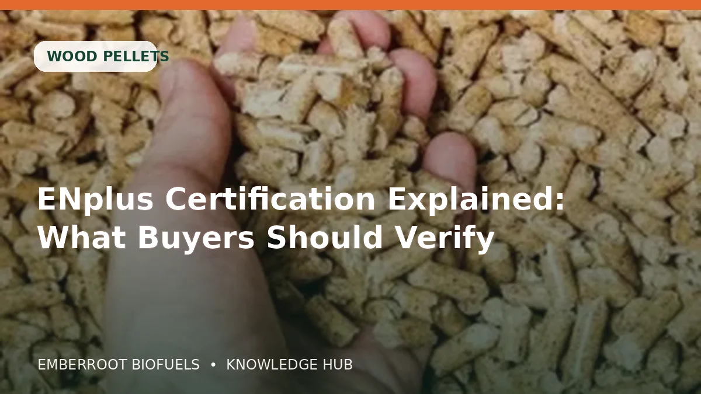

Pellet buying becomes easier when the decision is separated into fuel quality, appliance compatibility, packaging and delivery. A low headline price is not useful if the product creates excessive fines, absorbs moisture or does not match the appliance specification.
This article is educational. Confirm appliance instructions, local rules and the exact product specification before ordering or burning any fuel.
What matters most
Pellet buying becomes easier when the decision is separated into fuel quality, appliance compatibility, packaging and delivery. A low headline price is not useful if the product creates excessive fines, absorbs moisture or does not match the appliance specification.
Ash level
Ash influences cleaning frequency, residue volume and whether a fuel suits the appliance manufacturer’s limits.
Ask for this information in writing and compare it with the labels and condition of the delivered load. The same product name can cover different qualities, packing units and handling histories.
Mechanical durability
Durable pellets create fewer fines during handling and are more likely to feed consistently through an auger.
Ask for this information in writing and compare it with the labels and condition of the delivered load. The same product name can cover different qualities, packing units and handling histories.
Certification and identity
Check the exact quality class, producer or trader identity, certification number and whether documents match the delivered batch.
Ask for this information in writing and compare it with the labels and condition of the delivered load. The same product name can cover different qualities, packing units and handling histories.
Packaging
Bags, pallets, big bags and bulk delivery protect fuel differently and change unloading, storage and labour requirements.
Ask for this information in writing and compare it with the labels and condition of the delivered load. The same product name can cover different qualities, packing units and handling histories.
Practical comparison
| What to check | Why it matters |
|---|---|
| Ash level | Ash influences cleaning frequency, residue volume and whether a fuel suits the appliance manufacturer’s limits. |
| Mechanical durability | Durable pellets create fewer fines during handling and are more likely to feed consistently through an auger. |
| Certification and identity | Check the exact quality class, producer or trader identity, certification number and whether documents match the delivered batch. |
| Packaging | Bags, pallets, big bags and bulk delivery protect fuel differently and change unloading, storage and labour requirements. |
| Storage conditions | Keep biomass dry, raised from wet floors and protected from rain, condensation and uncontrolled humidity. |
A practical step-by-step approach
- 1
Define the exact use and appliance or process
- 2
Write down the required grade, dimensions and moisture limit
- 3
Choose bag, pallet, big bag or bulk delivery
- 4
Confirm net tonnage, vehicle access and unloading method
- 5
Request a written quotation and supporting documents
- 6
Verify payment instructions through a trusted contact channel
- 7
Inspect and record the delivery before accepting it into storage
Common mistakes to avoid
- Buying from a title or photograph without a written specification
- Ignoring storage space and unloading access
- Comparing price without comparing net weight and delivery basis
- Using fuel that the appliance manufacturer does not approve
- Paying against bank or wallet details that were not independently verified
Buyer checklist
- Product and grade are named precisely
- Moisture, dimensions and relevant quality values are written
- Packing unit and net quantity are clear
- Origin, producer or trader identity is stated
- Delivery terms, unloading and lead time are agreed
- Payment recipient and order reference are verified
- Claims and certification numbers can be checked independently
Frequently asked questions
Is the cheapest option normally the best?
Not necessarily. Compare the delivered specification, net quantity, storage losses, appliance compatibility and freight rather than the headline price alone.
Should I request a sample?
For a substantial order, a representative sample or recent test document can help, but it must be tied to the same product and batch process as the commercial delivery.
Can I rely on a certification logo?
A logo is not enough. Verify the certificate or company identity through the official scheme and make sure the product class and supplier role match the claim.
When should payment be made?
Follow the written quotation and verified order process. Confirm the payee through a trusted channel and never rely on a last-minute change of banking or wallet details.
Useful official references
Need a written biomass offer?
Select your product and tonnage, then send a quotation request. Packaging, specification, availability and freight are confirmed in writing before payment.